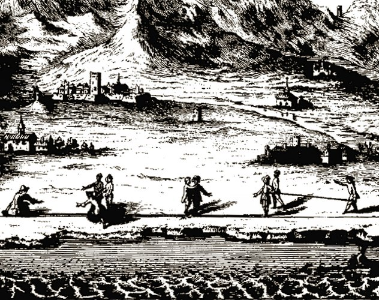
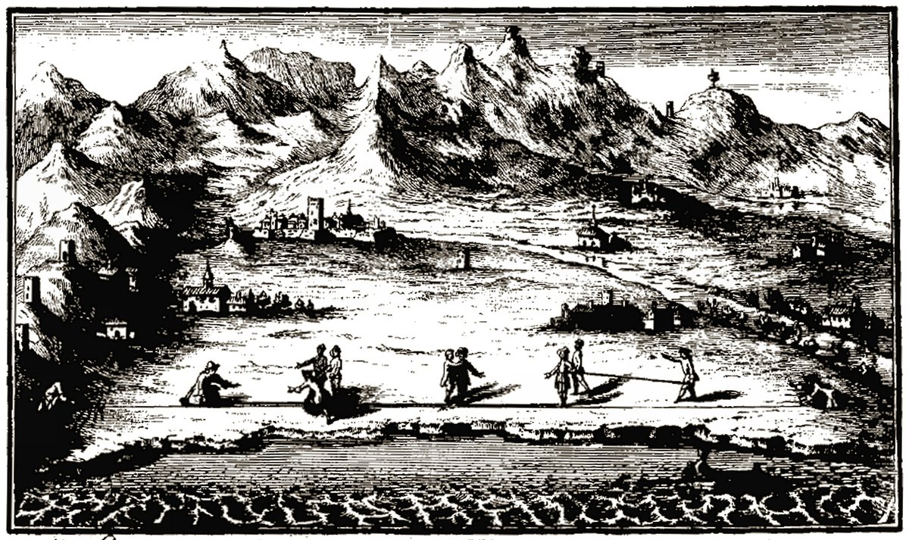
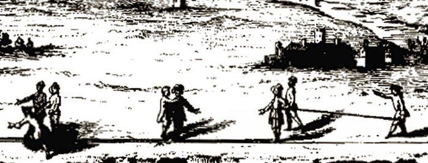

Subtracting from Kilometers
Today: subtract meters, or kilometers and meters, from whole kilometers by breaking one kilometer into 1,000 meters, and check by adding back. Dimensions Math 3B, Chapter 11, Lesson 4 · Subtracting from Kilometers

Near Paris, France · about 230 years ago

How do you take meters away from whole kilometers?
Break one kilometer into 1,000 meters. Take the meters from that kilometer, and keep the other kilometers whole.
You will…
- Break one kilometer into 1,000 meters when you need to take meters away.
- Subtract meters, or kilometers and meters, from whole kilometers.
- Check your answer by adding back.
Why Delambre's road?
This real engraving was made in France in 1740 for a report about measuring the land. It shows how a team measured a long, straight line along the ground: they laid long rods down end to end, one after another. Delambre's team did the same kind of job in 1798, almost 60 years after this picture was made.


To set the length of the new meter, French scientists measured a long line across France, from Dunkirk in the north to Barcelona in Spain. A big measuring job like this is called a survey. Near the town of Melun, Jean-Baptiste Delambre's team measured a straight road almost 12 kilometers long. That road was their baseline, the one line they measured rod by rod. They laid four metal rulers end to end, each about 4 meters long, again and again. It took them about six weeks.
Today's math: a road is measured in whole kilometers, but the part that is done may be only some meters. Break one kilometer into 1,000 meters, take the meters away, and keep the other kilometers whole.
One kilometer is 1,000 meters, so today you'll take numbers away from 1,000 a lot. Type each answer, then check. You can fix any answer and check again.
Kilometers into meters
Think: Measuring Before Lunch
🔨 Do · ✏️ WriteToday Delambre's team has 3 km of road to measure. By lunch, they have measured 450 m. How much road is left to measure?
The road is drawn as 3 whole kilometers in a row. When you break a kilometer, it opens up below as one long ruler, 1,000 meters long, with a marker to cut it.
Break a kilometer
Press ✂ Break a kilometer.
Cut 450 m
Drag the marker to 450 on the open kilometer.
What is left of the open kilometer?
What is left of the road?
Now write it in meters
Tell how
2 km 550 m are left. One kilometer broke into 1,000 m. 450 m were measured, 550 m were not, and 2 whole kilometers were never touched.
Break one kilometer, keep the rest
- Take away the whole kilometers. 6 km − 1 km 240 m: take 1 whole kilometer away. 5 km are left.
- Break one kilometer. You can't take meters from a whole kilometer. Break one kilometer into 1,000 m. 5 km is the same as 4 km 1,000 m.
- Take the meters from the 1,000. Count up: 240 + 60 = 300, and 300 + 700 = 1,000. So 1,000 − 240 = 760.
- Keep the other kilometers. 6 km − 1 km 240 m = 4 km 760 m.
- All in meters. 6 km is 6,000 m. 6,000 m − 1,240 m = 4,760 m = 4 km 760 m.
- Check by adding back. 4 km 760 m + 1 km 240 m = 5 km 1,000 m = 6 km.
Four ways to subtract from kilometers
Your Turn: 7 km − 2 km 640 m
🔨 DoA road is 7 km long. Take away 2 km 640 m. How much is left?
A road of 7 whole kilometers. Take whole kilometers away by tapping them. A broken kilometer opens below as a 1,000 m ruler.
Take away the kilometers
Tap 2 whole kilometers to take them away.
Break a kilometer
Press ✂ Break a kilometer.
Cut 640 m
Drag the marker to 640 on the open kilometer.
What is left?
Check by adding back
Kai Counts a Broken Kilometer
🔨 Do · ✏️ WriteA road is 8 km long. Take away 3 km 200 m. Kai says, "5 km 800 m are left."
A road of 8 whole kilometers. Take whole kilometers away by tapping them. A broken kilometer opens below as a 1,000 m ruler.
Take away the kilometers
Tap 3 whole kilometers to take them away.
Break a kilometer
Press ✂ Break a kilometer.
Cut 200 m
Drag the marker to 200 on the open kilometer.
Count what is left
Find Kai's mix-up
Help Kai
Leo Breaks It Into 100
🔨 Do · ✏️ WriteA road is 3 km long. Take away 70 m. Leo says, "100 − 70 = 30, so 2 km 30 m are left."
A road of 3 whole kilometers. A broken kilometer opens below as a ruler. Look at the number at its end.
Break a kilometer
Press ✂ Break a kilometer.
Cut 70 m
Drag the marker to 70 on the open kilometer.
How long is the open kilometer?
What is left?
Help Leo
Juno Writes the Wrong Part
🔨 Do · ✏️ WriteA road is 6 km long. Take away 900 m. Juno says, "5 km 900 m are left."
A road of 6 whole kilometers. A broken kilometer opens below as a 1,000 m ruler. The part you cut off turns purple.
Break a kilometer
Press ✂ Break a kilometer.
Cut 900 m
Drag the marker to 900 on the open kilometer.
Read the open kilometer
What is left?
Help Juno
On Your Own: Two Roads
🔨 Do · ✏️ WriteA long road is 9 km. Take away 2 km 480 m. Then a short road is 1 km. Take away 340 m.
The long road: 9 whole kilometers. Take whole kilometers away by tapping them. A broken kilometer opens below as a 1,000 m ruler.
Take away the kilometers
Tap 2 whole kilometers to take them away.
Break a kilometer
Press ✂ Break a kilometer.
Cut 480 m
Drag the marker to 480 on the open kilometer.
The long road
The short road
Tell how you know
Two Parts in a Row
🔨 DoA road is 6 km long. Part 1 measured is 2 km 350 m. Part 2 measured is 1 km 550 m. Take them away one at a time. How much of the road is left to measure?
A road of 6 whole kilometers. Tap a whole kilometer to take it away. A broken kilometer opens below as a 1,000 m ruler, and each part you cut stays shaded on it.
Problem 1 · Part 1: take away the kilometers
Tap 2 whole kilometers to take them away.
Problem 1 · Part 1: break a kilometer
Press ✂ Break a kilometer.
Problem 1 · Part 1: cut 350 m
Drag the marker to 350 on the open kilometer.
Problem 1 · What is left after part 1?
Problem 2 · Part 2: take away the kilometer
Tap 1 whole kilometer to take it away.
Problem 2 · Part 2: cut 550 m
The open kilometer still has 650 m. Drag the marker to cut 550 m more.
Problem 2 · What is left after part 2?
Prove It
✏️ WriteProblem 3 · Prove It
Ten Kilometers
A road is 10 km long. Take away 4 km 75 m. How much is left?
Turn in your work
- Check the list below. Jobs 1 to 8 are required. The Bonus is optional.
- Press 📋 Gather my answers, then 📋 Copy. Or press 🖨️ Print or save as PDF.
- Open this lesson's assignment in Canvas.
- Paste your answers (or upload your PDF and journal photo), then press Submit.
All my answers
Your answers and your work on this page save on this device as you go.
Before you turn in
- I finished Jobs 1 to 8.
- I broke one kilometer into 1,000 m and kept the other kilometers whole.
- I checked an answer by adding back.
- I tried the Bonus. (optional)
Lesson 3.11.05 · Liters and Milliliters
Next time, you'll measure something new: how much water a bottle or a cup can hold, in liters and milliliters.
The "London" Symphony
The slow part of a symphony by Joseph Haydn, first played in London in 1795. The tune walks along, calm and steady, then grows big and strong before it turns gentle again.
Symphony No. 104 in D major, "London," Hob. I:104, second part (Andante), Joseph Haydn (1795). Played by The Evergreen Symphony Orchestra. CC BY 3.0, via Wikimedia Commons.